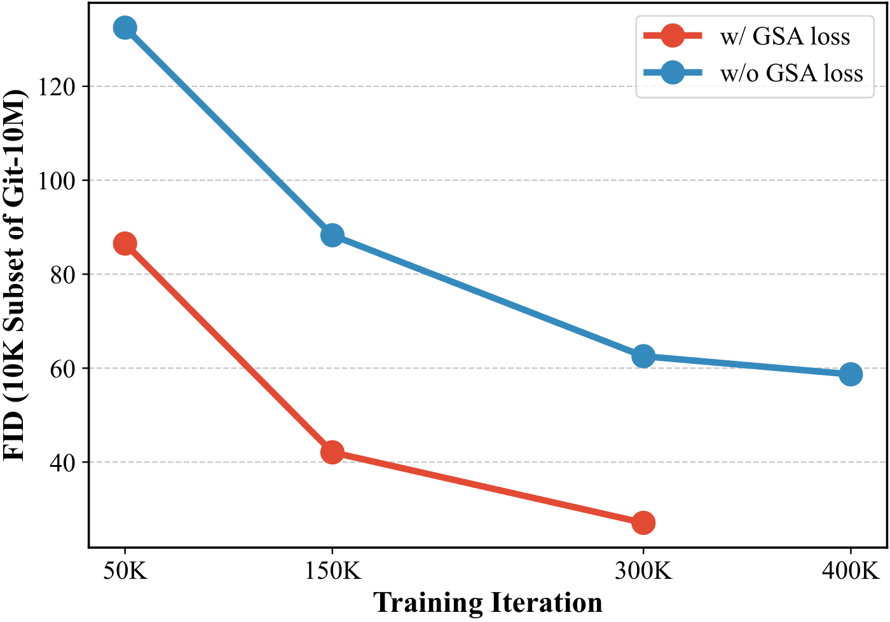

Geo-aware generation at 9B scale
One Flow Matching DiT, trained from scratch on EO data, generates satellite imagery from text, GSD and coordinates.

More text prompts Fig. 9 · six prompts


More GSD sweeps Figs. 10–12 · six prompts


Adapted to cloud removal and SAR-to-optical
GeoCore-9B adapted with LoRA, next to task-specific baselines on the same Sen2-MTC and QXS-SAROPT inputs, six scenes per task. Select a tile to compare it with the ground truth.
Use the arrows or the ← → keys to change scene · click a tile to open the comparison sliderSwipe or use the arrows to change scene · tap a tile to open the comparison slider
Quantitative results
GeoCore-9B leads all three RSICD metrics after LoRA text-to-image adaptation, with the best PSNR and SSIM for cloud removal and the best FID for SAR-to-optical translation.
| Method | IS↑ | FID↓ | CLIP↑ |
|---|---|---|---|
| Attn-GAN | 11.71 | 95.81 | 20.19 |
| DAE-GAN | 7.71 | 93.15 | 19.69 |
| StrucGAN | 5.84 | – | – |
| DF-GAN | 9.51 | 109.41 | 19.76 |
| Lafite | 10.70 | 74.11 | 22.52 |
| DALL-E | 2.59 | 191.93 | 20.13 |
| Txt2Img-MHN | 5.99 | 102.44 | 20.27 |
| RSDiff | 7.22 | 66.49 | – |
| CRS-Diff | 18.39 | 50.72 | 20.33 |
| Text2Earth | – | 24.49 | 25.62 |
| GeoCore-9B (Ours) | 22.15 | 18.82 | 27.15 |
GeoCore-9B is adapted to RSICD with LoRA; RSICD has no GSD or coordinates, so learned null geospatial embeddings are used in fine-tuning and inference.
(a) Cloud Removal
| Methods | PSNR↑ | SSIM↑ | LPIPS↓ |
|---|---|---|---|
| Task-specific specialist methods | |||
| McGAN | 17.448 | 0.513 | 0.447 |
| Pix2Pix | 16.985 | 0.455 | 0.535 |
| DSen2-CR | 16.827 | 0.534 | 0.446 |
| STGAN | 18.152 | 0.587 | 0.513 |
| CTGAN | 18.308 | 0.609 | 0.384 |
| CR-TS-Net | 18.585 | 0.615 | 0.342 |
| PMAA | 18.369 | 0.614 | 0.392 |
| UnCRtainTS | 18.770 | 0.631 | 0.333 |
| DDPM-CR | 18.742 | 0.614 | 0.329 |
| DiffCR | 19.150 | 0.671 | 0.291 |
| EMRDM | 20.067 | 0.709 | 0.255 |
| Foundation model adaptation | |||
| GeoCore-9B (Ours) | 20.809 | 0.799 | 0.256 |
(b) SAR-to-Optical Image Translation
| Methods | FID↓ | LPIPS↓ | HF-SCC↑ | SSIM↑ |
|---|---|---|---|---|
| Task-specific or adapted baselines | ||||
| Pix2Pix | 196.89 | 0.454 | 0.0000 | 0.247 |
| CycleGAN | 195.38 | 0.455 | 0.0001 | 0.251 |
| SAR-SMTNet | 117.69 | 0.435 | 0.0003 | 0.260 |
| CFCA-SET | 79.06 | 0.406 | 0.0006 | 0.273 |
| BBDM | 65.15 | 0.522 | 0.0004 | 0.238 |
| ControlNet | 22.39 | 0.434 | 0.0001 | 0.257 |
| Uni-ControlNet | 22.48 | 0.437 | 0.0002 | 0.257 |
| StegoGAN | 85.60 | 0.391 | 0.0019 | 0.280 |
| DGDM | 147.23 | 0.634 | 0.0001 | 0.288 |
| cBBDM | 69.47 | 0.420 | 0.0023 | 0.304 |
| C-DiffSET | 18.15 | 0.293 | 0.0108 | 0.372 |
| Foundation model adaptation | ||||
| GeoCore-9B (Ours) | 12.05 | 0.377 | 0.0163 | 0.370 |
GeoCore-9B is fine-tuned with LoRA while the pre-trained backbone stays frozen. On QXS-SAROPT, FID drops from 18.15 (C-DiffSET) to 12.05.
Geospatial Semantic Alignment ablation Figs. 5–6, Table 4



| Task | w/ GSA (μ = 0.5) | w/o GSA (μ = 0) |
|---|---|---|
| RSICD text-to-image | ||
| IS | 22.15 | 19.16 |
| FID | 18.82 | 28.43 |
| CLIP | 27.15 | 24.21 |
| QXS-SAROPT translation | ||
| FID | 12.05 | 19.92 |
| LPIPS | 0.377 | 0.436 |
| HF-SCC | 0.0163 | 0.0098 |
| SSIM | 0.370 | 0.324 |
| Sen2-MTC cloud removal | ||
| PSNR | 20.809 | 19.553 |
| SSIM | 0.799 | 0.683 |
| LPIPS | 0.256 | 0.284 |
GSA improves every reported metric: FID falls by 9.61 points on RSICD and 7.87 on QXS-SAROPT, and Sen2-MTC PSNR rises by 1.256 dB.
Frozen VAE on EO data Table 3, Fig. 8
| Domain | n | PSNR↑ | SSIM↑ | LPIPS↓ | HF-SCC↑ |
|---|---|---|---|---|---|
| Git-10M RGB | 100,000 | 31.48 | 0.931 | – | 0.710 |
| QXS-SAROPT optical | 2,000 | 38.93 | 0.968 | 0.011 | 0.766 |
| QXS-SAROPT SAR (1ch → 3ch) | 2,000 | 28.77 | 0.932 | 0.023 | 0.782 |
| Sen2-MTC cloudy | 687 | 35.48 | 0.943 | 0.013 | 0.416 |
| Sen2-MTC cloud-free | 687 | 35.58 | 0.924 | 0.016 | 0.564 |
HF-SCC from 0.416 to 0.782 on the downstream domains supports the frozen VAE for the evaluated 256 × 256 tasks; the lower Sen2-MTC values expose a domain-dependent limitation.

Metadata interventions and feature probes Tables 5–6
| Condition | FID↓ | GSD-bin acc.↑ | 15°-region acc.↑ |
|---|---|---|---|
| Full metadata | 48.32 | 0.555 | 0.485 |
| GSD null | 54.96 | 0.293 | 0.460 |
| GSD shuffled | 49.46 | 0.286 (orig.) / 0.376 (suppl.) | 0.424 |
| Coordinates null | 68.18 | 0.261 | 0.175 |
| Coordinates shuffled | 51.20 | 0.492 | 0.110 (orig.) / 0.366 (suppl.) |
1,000 Git-10M samples with fixed caption, seed and sampler. Nulling the coordinates lowers region accuracy from 0.485 to 0.175; with shuffled coordinates, outputs agree more with the supplied regions than with the original ones (0.366 versus 0.110). In a global-feature near-duplicate test against all 10,503,567 pre-training images, none of 500 coordinate-only generations exceeds the threshold.
| Task (train/val) | Metric | τ = .25 | τ = .50 | τ = .75 | DINOv3-Sat |
|---|---|---|---|---|---|
| EuroSAT (12,960/3,240) | Top-1 | 97.3% | 97.5% | 97.3% | 98.0% |
| LoveDA (3,000/1,200) | mIoU | 0.328 | 0.382 | 0.282 | 0.451 |
| BRIGHT (2,500/349 pairs) | mIoU | 0.402 | 0.482 | 0.381 | 0.442 |
One linear layer on frozen DiT features. At τ = 0.50, GeoCore-9B is within 0.5 top-1 points of DINOv3-Sat on EuroSAT and exceeds it on BRIGHT (0.482 versus 0.442); DINOv3-Sat is also the GSA teacher.
Geo-aware conditioning, training-only alignment
![GeoCore-9B framework. Training: an EO image is encoded by a frozen VAE encoder and noised along a linear trajectory; a DiT predicts the velocity under the Flow Matching loss. Local text tokens from a frozen text encoder join the image tokens; a global text embedding, the timestep and the metadata (GSD, latitude, longitude) are summed into one conditioning vector for AdaLN modulation. A frozen geospatial feature extractor (teacher) supervises the k-th DiT block through a projection head and the Geospatial Semantic Alignment loss. Inference: an ODE solver and the frozen VAE decoder.](static/images/framework_full.jpg)
- 01A 9B Flow Matching DiT, from scratch. 32 DiT blocks in the latent space of a pretrained VAE, trained on Git-10M.
- 02Text and geospatial metadata. T5-XXL tokens join the image tokens; CLIP text, GSD, latitude and longitude embeddings modulate the DiT through AdaLN.
- 03Geospatial Semantic Alignment. A frozen DINOv3-Sat teacher supervises block-8 features during training only, with no inference overhead.
BibTeX
@inproceedings{do2026geocore,
title={GeoCore-9B: Towards Geo-Aware Generative Foundation Models in Earth Observation},
author={Do, Jeonghyeok and Kim, Munchurl},
booktitle={Advances in Neural Information Processing Systems (NeurIPS)},
year={2026}
}